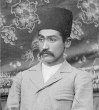

پژوهشها

تدوین آثار درویشخان
جمعآوری و تدوین آثار استاد درویشخان، یکی از بزرگترین اساتید موسیقی ایرانی و احیاء میراث هنری ایشان برای نسلهای آینده.
آوانگاری ردیف آوازی
آوانگاری بخشی از ردیف آوازی استاد رامبد صدیف و ثبت نتهای موسیقی برای حفظ امانتداری در انتقال این میراث ارزشمند.

سازسازی سهتار
تأسیس کارگاه سازسازی پس از گذراندن دوره تخصصی سهتار در وزارت میراث فرهنگی و گردشگری و ساخت سازهای اصیل با کیفیت بالا.